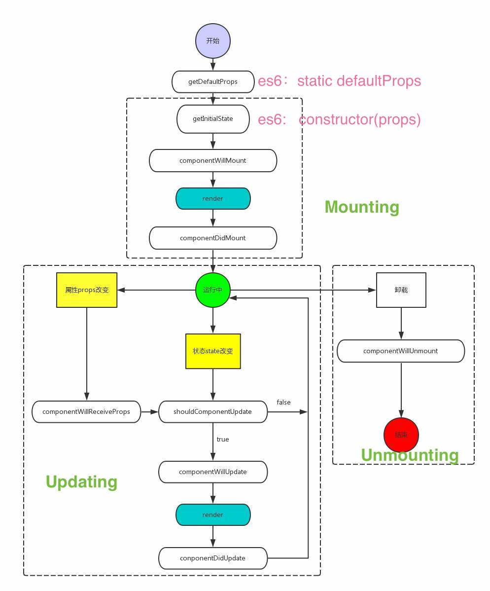

<!DOCTYPE html>


  


<html class="theme-next pisces use-motion" lang="zh-Hans">
<head><meta name="generator" content="Hexo 3.8.0">
  <meta charset="UTF-8">
<meta http-equiv="X-UA-Compatible" content="IE=edge">
<meta name="viewport" content="width=device-width, initial-scale=1, maximum-scale=1">
<meta name="theme-color" content="#222">


<meta http-equiv="Cache-Control" content="no-transform">
<meta http-equiv="Cache-Control" content="no-siteapp">


  
  
  <link href="/lib/fancybox/source/jquery.fancybox.css?v=2.1.5" rel="stylesheet" type="text/css">


<link href="/lib/font-awesome/css/font-awesome.min.css?v=4.6.2" rel="stylesheet" type="text/css">

<link href="/css/main.css?v=5.1.4" rel="stylesheet" type="text/css">


  <link rel="apple-touch-icon" sizes="180x180" href="/images/apple-touch-icon-next.png?v=5.1.4">


  <link rel="icon" type="image/png" sizes="32x32" href="/images/favicon-32x32-next.png?v=5.1.4">


  <link rel="icon" type="image/png" sizes="16x16" href="/images/favicon-16x16-next.png?v=5.1.4">


  <link rel="mask-icon" href="/images/logo.svg?v=5.1.4" color="#222">


  <meta name="keywords" content="React,">


<meta name="description" content="一、React发展历史 传统页面 : 服务器把数据和页面给浏览器，用户输入数据浏览器把数据传入服务器，服务器处理后再返回新的页面（前后端不分家时代）Facebook认为MVC的可读性、可扩展性和可维护性都不适合大型项目开发（每当需要添加一项新的功能或特性时，系统的复杂度就成级数增长，致使代码变得脆弱和不可预测）。   Model（模型）:  处理应用程序数据逻辑的部分。通常负责在数据库中存取数据">
<meta name="keywords" content="React">
<meta property="og:type" content="article">
<meta property="og:title" content="React">
<meta property="og:url" content="http://yoursite.com/2019/04/15/React/index.html">
<meta property="og:site_name" content="冬至">
<meta property="og:description" content="一、React发展历史 传统页面 : 服务器把数据和页面给浏览器，用户输入数据浏览器把数据传入服务器，服务器处理后再返回新的页面（前后端不分家时代）Facebook认为MVC的可读性、可扩展性和可维护性都不适合大型项目开发（每当需要添加一项新的功能或特性时，系统的复杂度就成级数增长，致使代码变得脆弱和不可预测）。   Model（模型）:  处理应用程序数据逻辑的部分。通常负责在数据库中存取数据">
<meta property="og:locale" content="zh-Hans">
<meta property="og:image" content="https://timgsa.baidu.com/timg?image&quality=80&size=b9999_10000&sec=1571811626995&di=7d95187511e62586fc2cb5fd3a0b7d49&imgtype=0&src=http%3A%2F%2Fimg2018.cnblogs.com%2Fblog%2F331769%2F201903%2F331769-20190314070341633-1595341780.png">
<meta property="og:image" content="http://img2018.cnblogs.com/common/1401779/201910/1401779-20191020010458965-2059977376.png">
<meta property="og:image" content="http://yoursite.com/images/reactLifeCycle.jpg">
<meta property="og:updated_time" content="2020-01-03T08:36:15.135Z">
<meta name="twitter:card" content="summary">
<meta name="twitter:title" content="React">
<meta name="twitter:description" content="一、React发展历史 传统页面 : 服务器把数据和页面给浏览器，用户输入数据浏览器把数据传入服务器，服务器处理后再返回新的页面（前后端不分家时代）Facebook认为MVC的可读性、可扩展性和可维护性都不适合大型项目开发（每当需要添加一项新的功能或特性时，系统的复杂度就成级数增长，致使代码变得脆弱和不可预测）。   Model（模型）:  处理应用程序数据逻辑的部分。通常负责在数据库中存取数据">
<meta name="twitter:image" content="https://timgsa.baidu.com/timg?image&quality=80&size=b9999_10000&sec=1571811626995&di=7d95187511e62586fc2cb5fd3a0b7d49&imgtype=0&src=http%3A%2F%2Fimg2018.cnblogs.com%2Fblog%2F331769%2F201903%2F331769-20190314070341633-1595341780.png">


<script type="text/javascript" id="hexo.configurations">
  var NexT = window.NexT || {};
  var CONFIG = {
    root: '/',
    scheme: 'Pisces',
    version: '5.1.4',
    sidebar: {"position":"left","display":"always","offset":12,"b2t":false,"scrollpercent":false,"onmobile":false},
    fancybox: true,
    tabs: true,
    motion: {"enable":true,"async":false,"transition":{"post_block":"fadeIn","post_header":"slideDownIn","post_body":"slideDownIn","coll_header":"slideLeftIn","sidebar":"slideUpIn"}},
    duoshuo: {
      userId: '0',
      author: '博主'
    },
    algolia: {
      applicationID: '',
      apiKey: '',
      indexName: '',
      hits: {"per_page":10},
      labels: {"input_placeholder":"Search for Posts","hits_empty":"We didn't find any results for the search: ${query}","hits_stats":"${hits} results found in ${time} ms"}
    }
  };
</script>


  <link rel="canonical" href="http://yoursite.com/2019/04/15/React/">


  <title>React | 冬至</title>
  


</head>

<body itemscope itemtype="http://schema.org/WebPage" lang="zh-Hans">

  
  
    
  

  <div class="container sidebar-position-left page-post-detail">

    <header id="header" class="header" itemscope itemtype="http://schema.org/WPHeader">
      <div class="header-inner"><div class="site-brand-wrapper">
  <div class="site-meta ">
    

    <div class="custom-logo-site-title">
      <a href="/" class="brand" rel="start">
        <span class="logo-line-before"><i></i></span>
        <span class="site-title">冬至</span>
        <span class="logo-line-after"><i></i></span>
      </a>
    </div>
      
        <p class="site-subtitle"></p>
      
  </div>

  <div class="site-nav-toggle">
    <button>
      <span class="btn-bar"></span>
      <span class="btn-bar"></span>
      <span class="btn-bar"></span>
    </button>
  </div>
</div>

<nav class="site-nav">
  

  
    <ul id="menu" class="menu">
      
        
        <li class="menu-item menu-item-窝">
          <a href="/" rel="section">
            
              <i class="menu-item-icon fa fa-fw fa-home"></i> <br>
            
            窝
          </a>
        </li>
      
        
        <li class="menu-item menu-item-签">
          <a href="/tags/" rel="section">
            
              <i class="menu-item-icon fa fa-fw fa-tags"></i> <br>
            
            签
          </a>
        </li>
      
        
        <li class="menu-item menu-item-类">
          <a href="/categories/" rel="section">
            
              <i class="menu-item-icon fa fa-fw fa-th"></i> <br>
            
            类
          </a>
        </li>
      
        
        <li class="menu-item menu-item-档">
          <a href="/archives/" rel="section">
            
              <i class="menu-item-icon fa fa-fw fa-archive"></i> <br>
            
            档
          </a>
        </li>
      
        
        <li class="menu-item menu-item-于">
          <a href="/about/" rel="section">
            
              <i class="menu-item-icon fa fa-fw fa-user"></i> <br>
            
            于
          </a>
        </li>
      

      
    </ul>
  

  
</nav>


 </div>
    </header>

    <main id="main" class="main">
      <div class="main-inner">
        <div class="content-wrap">
          <div id="content" class="content">
            

  <div id="posts" class="posts-expand">
    

  

  
  
  

  <article class="post post-type-normal" itemscope itemtype="http://schema.org/Article">
  
  
  
  <div class="post-block">
    <link itemprop="mainEntityOfPage" href="http://yoursite.com/2019/04/15/React/">

    <span hidden itemprop="author" itemscope itemtype="http://schema.org/Person">
      <meta itemprop="name" content="Lemon">
      <meta itemprop="description" content>
      <meta itemprop="image" content="/images/background22.jpg">
    </span>

    <span hidden itemprop="publisher" itemscope itemtype="http://schema.org/Organization">
      <meta itemprop="name" content="冬至">
    </span>

    
      <header class="post-header">

        
        
          <h1 class="post-title" itemprop="name headline">React</h1>
        

        <div class="post-meta">
          <span class="post-time">
            
              <span class="post-meta-item-icon">
                <i class="fa fa-calendar-o"></i>
              </span>
              
                <span class="post-meta-item-text">发表于</span>
              
              <time title="创建于" itemprop="dateCreated datePublished" datetime="2019-04-15T11:04:06+08:00">
                2019-04-15
              </time>
            

            

            
          </span>

          
            <span class="post-category">
            
              <span class="post-meta-divider">|</span>
            
              <span class="post-meta-item-icon">
                <i class="fa fa-folder-o"></i>
              </span>
              
                <span class="post-meta-item-text">分类于</span>
              
              
                <span itemprop="about" itemscope itemtype="http://schema.org/Thing">
                  <a href="/categories/前端-主流框架/" itemprop="url" rel="index">
                    <span itemprop="name">前端 - 主流框架</span>
                  </a>
                </span>

                
                
              
            </span>
          

          
            
          

          
          

          

          

          

        </div>
      </header>
    

    
    
    
    <div class="post-body" itemprop="articleBody">

      
      

      
        <h1 id="一、React发展历史"><a href="#一、React发展历史" class="headerlink" title="一、React发展历史"></a><font color="#c06">一、React发展历史</font></h1><blockquote>
<p>传统页面 : 服务器把数据和页面给浏览器，用户输入数据浏览器把数据传入服务器，服务器处理后再返回新的页面（前后端不分家时代）<br>Facebook认为MVC的可读性、可扩展性和可维护性都不适合大型项目开发（每当需要添加一项新的功能或特性时，系统的复杂度就成级数增长，致使代码变得脆弱和不可预测）。</p>
</blockquote>
<blockquote>
<p>Model（模型）:  处理应用程序数据逻辑的部分。通常负责在数据库中存取数据。<br>  View（视图）:  处理数据显示的部分。通常是依据模型数据创建的。<br>  Controller（控制器）:  处理用户交互的部分。通常负责从视图获取数据，并向模型发送数据。</p>
</blockquote>
<h1 id="二、理论知识"><a href="#二、理论知识" class="headerlink" title="二、理论知识"></a><font color="#c06">二、理论知识</font></h1><h2 id="1、主要原理和特点"><a href="#1、主要原理和特点" class="headerlink" title="1、主要原理和特点"></a>1、主要原理和特点</h2><h3 id="1）Virtual-DOM"><a href="#1）Virtual-DOM" class="headerlink" title="1）Virtual DOM"></a><font color="#f26">1）Virtual DOM</font></h3><p><strong>效率高</strong> 虚拟DOM：传统web页面一般是直接操作DOM，代价很大，涉及重绘重排非常耗性能，而React 为了尽可能减少对DOM的操作，提供了一种不同的而又强大的方式来更新DOM，代替直接操作DOM,就是Virtual dom, 一个轻量级虚拟的dom。更新virtual dom时不保证马上影响真实dom，react会等到事件循环结束，然后利用<font color="blue">diff算法</font>，通过当前新的dom与之前做比较，计算出最小的步骤更新真实的dom。</p>
<h3 id="2）组件"><a href="#2）组件" class="headerlink" title="2）组件"></a><font color="#f26">2）组件</font></h3><p><strong>天生组件化</strong> Components组件：在dom树上的节点被称为元素，在这里不同称为virtual dom，整体称为component， 众多的virtual dom的节点就是一个完整的抽象的组件。</p>
<h3 id="3）单项数据流"><a href="#3）单项数据流" class="headerlink" title="3）单项数据流"></a><font color="#f26">3）单项数据流</font></h3><p><strong>清晰</strong> 从父节点传递到子节点，因为组件是简单而且易于把握的，他们只需从父节点获取props渲染即可。</p>
<h3 id="4）state-amp-amp-props"><a href="#4）state-amp-amp-props" class="headerlink" title="4）state&amp;&amp;props"></a><font color="#f26">4）state&amp;&amp;props</font></h3><p>state属性包含定义组件所需要的一些数据，当数据发生变化时，将会调用Render重现渲染，<br>React 把组件看成是一个状态机（State Machines）。通过与用户的交互，实现不同状态，然后渲染 UI，让用户界面和数据保持一致。</p>
<h3 id="5）生命周期钩子"><a href="#5）生命周期钩子" class="headerlink" title="5）生命周期钩子"></a><font color="#f26">5）生命周期钩子</font></h3><p>组件载入阶段：<br>  componentWillMount:组件即将被装载、渲染到页面上，只调用1次<br>  render:组件在这里生成虚拟的 DOM 节点<br>  componentDidMount:组件真正在被装载之后，这里可以拿到真实DOM执行操作，只调用1次</p>
<p>运行中状态：<br>  componentWillReceiveProps(nextProps):组件将要接收到新属性的时候调用，在这时setState不会触发额外的render,因为此时已经有一次来自父组件引发的render了。<br>  shouldComponentUpdate:组件接受到新属性或者新状态的时候（返回 false，接收数据后不更新，阻止 render ，后面的函数不会继续执行）<br>  componentWillUpdate:组件即将更新不能修改属性和状态。（这里也会调用render）<br>  componentDidUpdate:组件已经更新</p>
<p>销毁阶段：<br>  componentWillUnmount:组件即将销毁，这时候可以销毁绑定的事件监听或者定时器什么的。</p>
<p>应用场景：<br>复杂场景下的高性能<br>重用组件库，组件组合（ant.design-支付宝组件库）<br>懒人必备</p>
<h2 id="2、手动搭建react配置"><a href="#2、手动搭建react配置" class="headerlink" title="2、手动搭建react配置"></a>2、手动搭建react配置</h2><h3 id="1）package-json"><a href="#1）package-json" class="headerlink" title="1）package.json"></a>1）package.json</h3><p>package.json是下载依赖包的“说明书”，主要介绍其中的3个属性。<br><strong>1.devDependencies 开发依赖</strong><br><strong>2.dependencies 生产依赖</strong><br><strong>3.script 定义脚本命令(npm run …)</strong><br><figure class="highlight bash"><table><tr><td class="gutter"><pre><span class="line">1</span><br><span class="line">2</span><br><span class="line">3</span><br><span class="line">4</span><br><span class="line">5</span><br><span class="line">6</span><br></pre></td><td class="code"><pre><span class="line">&#123;</span><br><span class="line"> <span class="string">"scripts"</span>: &#123;</span><br><span class="line">    <span class="string">"start"</span>: <span class="string">"webpack-dev-server --progress --colors --devtool source-map"</span>,</span><br><span class="line">    <span class="string">"build"</span>: <span class="string">"git rm -rf dist&amp;&amp;node build/build.js"</span></span><br><span class="line">  &#125;,</span><br><span class="line">&#125;</span><br></pre></td></tr></table></figure></p>
<figure class="highlight bash"><table><tr><td class="gutter"><pre><span class="line">1</span><br><span class="line">2</span><br><span class="line">3</span><br><span class="line">4</span><br><span class="line">5</span><br><span class="line">6</span><br><span class="line">7</span><br><span class="line">8</span><br><span class="line">9</span><br><span class="line">10</span><br><span class="line">11</span><br><span class="line">12</span><br><span class="line">13</span><br><span class="line">14</span><br><span class="line">15</span><br><span class="line">16</span><br><span class="line">17</span><br><span class="line">18</span><br><span class="line">19</span><br><span class="line">20</span><br><span class="line">21</span><br><span class="line">22</span><br><span class="line">23</span><br><span class="line">24</span><br><span class="line">25</span><br><span class="line">26</span><br><span class="line">27</span><br><span class="line">28</span><br><span class="line">29</span><br></pre></td><td class="code"><pre><span class="line">&#123;</span><br><span class="line">  <span class="string">"name"</span>: <span class="string">"react1"</span>,</span><br><span class="line">  <span class="string">"version"</span>: <span class="string">"1.0.0"</span>,</span><br><span class="line">  <span class="string">"description"</span>: <span class="string">""</span>,</span><br><span class="line">  <span class="string">"scripts"</span>: &#123;&#125;,</span><br><span class="line">  <span class="string">"author"</span>: <span class="string">"jiyingying"</span>,</span><br><span class="line">  <span class="string">"license"</span>: <span class="string">"ISC"</span>,</span><br><span class="line">  <span class="string">"devDependencies"</span>: &#123;</span><br><span class="line">    <span class="string">"webpack-dev-server"</span>: <span class="string">"^3.1.9"</span></span><br><span class="line">  &#125;,</span><br><span class="line">  <span class="string">"dependencies"</span>: &#123;</span><br><span class="line">    <span class="string">"babel"</span>: <span class="string">"^6.23.0"</span>,</span><br><span class="line">    <span class="string">"babel-core"</span>: <span class="string">"^6.24.0"</span>,</span><br><span class="line">    <span class="string">"babel-loader"</span>: <span class="string">"^7.1.5"</span>,</span><br><span class="line">    <span class="string">"babel-preset-es2015"</span>: <span class="string">"^6.24.0"</span>,</span><br><span class="line">    <span class="string">"babel-preset-react"</span>: <span class="string">"^6.23.0"</span>,</span><br><span class="line">    <span class="string">"babel-preset-stage-0"</span>: <span class="string">"^6.22.0"</span>,</span><br><span class="line">    <span class="string">"babel-preset-stage-2"</span>: <span class="string">"^6.22.0"</span>,</span><br><span class="line">    <span class="string">"babel-preset-env"</span>: <span class="string">"^1.7.0"</span>,</span><br><span class="line">    <span class="string">"css-loader"</span>: <span class="string">"^0.27.3"</span>,</span><br><span class="line">    <span class="string">"file-loader"</span>: <span class="string">"^0.10.1"</span>,</span><br><span class="line">    <span class="string">"react"</span>: <span class="string">"^15.3.0"</span>,</span><br><span class="line">    <span class="string">"react-dom"</span>: <span class="string">"^15.3.0"</span>,</span><br><span class="line">    <span class="string">"style-loader"</span>: <span class="string">"^0.23.1"</span>,</span><br><span class="line">    <span class="string">"url-loader"</span>: <span class="string">"^0.5.8"</span>,</span><br><span class="line">    <span class="string">"webpack"</span>: <span class="string">"^4.41.2"</span>,</span><br><span class="line">    <span class="string">"webpack-cli"</span>: <span class="string">"^3.3.9"</span></span><br><span class="line">  &#125;</span><br><span class="line">&#125;</span><br></pre></td></tr></table></figure>
<h3 id="2）webpack-config-js"><a href="#2）webpack-config-js" class="headerlink" title="2）webpack.config.js"></a>2）webpack.config.js</h3><p>module.exports模块导出 =<br>{<br>&nbsp;&nbsp;&nbsp;&nbsp;entry <font color="blue">入口文件</font> : ‘./src/js/entry.js<font color="blue">入口文件的相对地址</font>‘,<br>&nbsp;&nbsp;&nbsp;&nbsp;output <font color="blue">出口文件</font> : {<br>&nbsp;&nbsp;&nbsp;&nbsp;&nbsp;&nbsp;&nbsp;path <font color="blue">出口文件路径</font> : __dirname+’/static/‘ <font color="blue">相对地址+出口文件夹名称</font>,<br>&nbsp;&nbsp;&nbsp;&nbsp;&nbsp;&nbsp;&nbsp;publicPath <font color="blue">公共路径</font> : “<a href="http://localhost:8080/static" target="_blank" rel="noopener">http://localhost:8080/static</a> <font color="blue">路径值</font>“,<br>&nbsp;&nbsp;&nbsp;&nbsp;&nbsp;&nbsp;&nbsp;filename <font color="blue">出口文件名称</font> : ‘index.js <font color="blue">出口文件名称值</font>‘<br>&nbsp;&nbsp;&nbsp;&nbsp;},<br>&nbsp;&nbsp;&nbsp;&nbsp;module <font color="blue">模块配置</font> : {<br>&nbsp;&nbsp;&nbsp;&nbsp;&nbsp;&nbsp;&nbsp;&nbsp;rules <font color="blue">（规定使用什么loader解析相应文件，2.0版本之后是rules，1.0是loaders）</font> : [<br>&nbsp;&nbsp;&nbsp;&nbsp;&nbsp;&nbsp;&nbsp;&nbsp;&nbsp;&nbsp;&nbsp;&nbsp;{test : /.less$/ , <font color="red">use</font> : <font color="red">[</font>‘style-loader’,’css-loader’,’less-loader’<font color="red">]</font> } <font color="blue">解析less文件</font>,<br>&nbsp;&nbsp;&nbsp;&nbsp;&nbsp;&nbsp;&nbsp;&nbsp;&nbsp;&nbsp;&nbsp;&nbsp;{<br>&nbsp;&nbsp;&nbsp;&nbsp;&nbsp;&nbsp;&nbsp;&nbsp;&nbsp;&nbsp;&nbsp;&nbsp;&nbsp;&nbsp;&nbsp;&nbsp;test <font color="blue"></font> : /.js$/  <font color="blue">使用babel-loader解析js</font> ,<br>&nbsp;&nbsp;&nbsp;&nbsp;&nbsp;&nbsp;&nbsp;&nbsp;&nbsp;&nbsp;&nbsp;&nbsp;&nbsp;&nbsp;&nbsp;&nbsp;loader  <font color="blue">当只有1个loader时，可以写loaader，当其后的值是多个时，写use</font>  : “babel-loader”  ,<br>&nbsp;&nbsp;&nbsp;&nbsp;&nbsp;&nbsp;&nbsp;&nbsp;&nbsp;&nbsp;&nbsp;&nbsp;&nbsp;&nbsp;&nbsp;&nbsp;exclude <font color="blue">表示哪些目录中的 .js 文件不要进行 babel-loader,include与之相反</font> :/node_modules/ <font color="blue"></font> ,<br>&nbsp;&nbsp;&nbsp;&nbsp;&nbsp;&nbsp;&nbsp;&nbsp;&nbsp;&nbsp;&nbsp;&nbsp;&nbsp;&nbsp;&nbsp;&nbsp;query <font color="blue">询问</font> : {<br>&nbsp;&nbsp;&nbsp;&nbsp;&nbsp;&nbsp;&nbsp;&nbsp;&nbsp;&nbsp;&nbsp;&nbsp;&nbsp;&nbsp;&nbsp;&nbsp;&nbsp;&nbsp;&nbsp;&nbsp;presets <font color="blue">预置</font> : [<br>&nbsp;&nbsp;&nbsp;&nbsp;&nbsp;&nbsp;&nbsp;&nbsp;&nbsp;&nbsp;&nbsp;&nbsp;&nbsp;&nbsp;&nbsp;&nbsp;&nbsp;&nbsp;&nbsp;&nbsp;&nbsp;&nbsp;&nbsp;&nbsp;require.resolve(‘babel-preset-es2015’) <font color="blue">识别es6</font> ,<br>&nbsp;&nbsp;&nbsp;&nbsp;&nbsp;&nbsp;&nbsp;&nbsp;&nbsp;&nbsp;&nbsp;&nbsp;&nbsp;&nbsp;&nbsp;&nbsp;&nbsp;&nbsp;&nbsp;&nbsp;&nbsp;&nbsp;&nbsp;&nbsp;require.resolve(‘babel-preset-react’) <font color="blue">识别JSX语法</font> ,<br>&nbsp;&nbsp;&nbsp;&nbsp;&nbsp;&nbsp;&nbsp;&nbsp;&nbsp;&nbsp;&nbsp;&nbsp;&nbsp;&nbsp;&nbsp;&nbsp;&nbsp;&nbsp;&nbsp;&nbsp;&nbsp;&nbsp;&nbsp;&nbsp;require.resolve(‘babel-preset-stage-0’) <font color="blue">识别es7</font><br>&nbsp;&nbsp;&nbsp;&nbsp;&nbsp;&nbsp;&nbsp;&nbsp;&nbsp;&nbsp;&nbsp;&nbsp;&nbsp;&nbsp;&nbsp;&nbsp;&nbsp;&nbsp;&nbsp;&nbsp;]<br>&nbsp;&nbsp;&nbsp;&nbsp;&nbsp;&nbsp;&nbsp;&nbsp;&nbsp;&nbsp;&nbsp;&nbsp;&nbsp;&nbsp;&nbsp;&nbsp;}<br>&nbsp;&nbsp;&nbsp;&nbsp;&nbsp;&nbsp;&nbsp;&nbsp;&nbsp;&nbsp;&nbsp;&nbsp;},<br>&nbsp;&nbsp;&nbsp;&nbsp;&nbsp;&nbsp;&nbsp;&nbsp;&nbsp;&nbsp;&nbsp;&nbsp;{test:/.(jpg|png)$/,loader:’url-loader’} <font color="blue">解析jpg和png文件</font><br>&nbsp;&nbsp;&nbsp;&nbsp;&nbsp;&nbsp;&nbsp;&nbsp;&nbsp;&nbsp;&nbsp;&nbsp;]<br>&nbsp;&nbsp;&nbsp;&nbsp;&nbsp;&nbsp;&nbsp;&nbsp;},<br>&nbsp;&nbsp;&nbsp;&nbsp;&nbsp;&nbsp;&nbsp;&nbsp;devServer <font color="blue">设备服务器配置</font> :{<br>&nbsp;&nbsp;&nbsp;&nbsp;&nbsp;&nbsp;&nbsp;&nbsp;&nbsp;&nbsp;&nbsp;&nbsp;port <font color="blue">端口号</font> :3030,<br>&nbsp;&nbsp;&nbsp;&nbsp;&nbsp;&nbsp;&nbsp;&nbsp;&nbsp;&nbsp;&nbsp;&nbsp;historyApiFallback:true,//单页面应用<br>&nbsp;&nbsp;&nbsp;&nbsp;&nbsp;&nbsp;&nbsp;&nbsp;&nbsp;&nbsp;&nbsp;&nbsp;inline:true,<br>&nbsp;&nbsp;&nbsp;&nbsp;&nbsp;&nbsp;&nbsp;&nbsp;&nbsp;&nbsp;&nbsp;&nbsp;historyApiFallback: true,<br>&nbsp;&nbsp;&nbsp;&nbsp;&nbsp;&nbsp;&nbsp;&nbsp;&nbsp;&nbsp;&nbsp;&nbsp;disableHostCheck: true,<br>&nbsp;&nbsp;&nbsp;&nbsp;&nbsp;&nbsp;&nbsp;&nbsp;&nbsp;&nbsp;&nbsp;&nbsp;hot <font color="blue">热更新</font> : true,<br>&nbsp;&nbsp;&nbsp;&nbsp;&nbsp;&nbsp;&nbsp;&nbsp;&nbsp;&nbsp;&nbsp;&nbsp;proxy <font color="blue">代理</font> : {<br>&nbsp;&nbsp;&nbsp;&nbsp;&nbsp;&nbsp;&nbsp;&nbsp;&nbsp;&nbsp;&nbsp;&nbsp;&nbsp;&nbsp;&nbsp;&nbsp;”/api/“: {<br>&nbsp;&nbsp;&nbsp;&nbsp;&nbsp;&nbsp;&nbsp;&nbsp;&nbsp;&nbsp;&nbsp;&nbsp;&nbsp;&nbsp;&nbsp;&nbsp;&nbsp;&nbsp;&nbsp;&nbsp;target: “<a href="http://jiyingying.m.ncfwxlocal.com/&quot;" target="_blank" rel="noopener">http://jiyingying.m.ncfwxlocal.com/&quot;</a>,<br>&nbsp;&nbsp;&nbsp;&nbsp;&nbsp;&nbsp;&nbsp;&nbsp;&nbsp;&nbsp;&nbsp;&nbsp;&nbsp;&nbsp;&nbsp;&nbsp;&nbsp;&nbsp;&nbsp;&nbsp;secure: false,<br>&nbsp;&nbsp;&nbsp;&nbsp;&nbsp;&nbsp;&nbsp;&nbsp;&nbsp;&nbsp;&nbsp;&nbsp;&nbsp;&nbsp;&nbsp;&nbsp;&nbsp;&nbsp;&nbsp;&nbsp;changeOrigin: true<br>&nbsp;&nbsp;&nbsp;&nbsp;&nbsp;&nbsp;&nbsp;&nbsp;&nbsp;&nbsp;&nbsp;&nbsp;&nbsp;&nbsp;&nbsp;&nbsp;&nbsp;}<br>&nbsp;&nbsp;&nbsp;&nbsp;&nbsp;&nbsp;&nbsp;&nbsp;&nbsp;&nbsp;&nbsp;&nbsp;}<br>&nbsp;&nbsp;&nbsp;&nbsp;&nbsp;&nbsp;&nbsp;&nbsp;}<br>}<br><figure class="highlight bash"><table><tr><td class="gutter"><pre><span class="line">1</span><br><span class="line">2</span><br><span class="line">3</span><br><span class="line">4</span><br><span class="line">5</span><br><span class="line">6</span><br><span class="line">7</span><br><span class="line">8</span><br><span class="line">9</span><br><span class="line">10</span><br><span class="line">11</span><br><span class="line">12</span><br><span class="line">13</span><br><span class="line">14</span><br><span class="line">15</span><br><span class="line">16</span><br><span class="line">17</span><br><span class="line">18</span><br><span class="line">19</span><br><span class="line">20</span><br><span class="line">21</span><br><span class="line">22</span><br><span class="line">23</span><br><span class="line">24</span><br><span class="line">25</span><br><span class="line">26</span><br><span class="line">27</span><br><span class="line">28</span><br><span class="line">29</span><br><span class="line">30</span><br><span class="line">31</span><br><span class="line">32</span><br><span class="line">33</span><br><span class="line">34</span><br><span class="line">35</span><br><span class="line">36</span><br><span class="line">37</span><br><span class="line">38</span><br><span class="line">39</span><br><span class="line">40</span><br><span class="line">41</span><br></pre></td><td class="code"><pre><span class="line">module.exports = &#123;</span><br><span class="line">  entry:<span class="string">'./src/js/entry.js'</span>,</span><br><span class="line">  output:&#123;</span><br><span class="line">      path:__dirname+<span class="string">'/static/'</span>,</span><br><span class="line">      publicPath:<span class="string">"http://localhost:3030/static"</span>,</span><br><span class="line">      filename:<span class="string">'index.js'</span></span><br><span class="line">  &#125;,</span><br><span class="line">  module:&#123;</span><br><span class="line">      rules:[</span><br><span class="line">          &#123;<span class="built_in">test</span>:/\.less$/,use:[<span class="string">'style-loader'</span>,<span class="string">'css-loader'</span>,<span class="string">'less-loader'</span>]&#125;,</span><br><span class="line">          &#123;</span><br><span class="line">              <span class="built_in">test</span>:/\.js$/,</span><br><span class="line">              loader:<span class="string">"babel-loader"</span>,</span><br><span class="line">              exclude:/node_modules/,</span><br><span class="line">              query:&#123;</span><br><span class="line">                  presets:[</span><br><span class="line">                      require.resolve(<span class="string">'babel-preset-es2015'</span>),</span><br><span class="line">                      require.resolve(<span class="string">'babel-preset-react'</span>),</span><br><span class="line">                      require.resolve(<span class="string">'babel-preset-stage-0'</span>)</span><br><span class="line">                  ]</span><br><span class="line">              &#125;</span><br><span class="line">          &#125;,</span><br><span class="line">          &#123;<span class="built_in">test</span>:/\.(jpg|png)$/,loader:<span class="string">'url-loader'</span>&#125;</span><br><span class="line">      ]</span><br><span class="line">  &#125;,</span><br><span class="line">  devServer:&#123;</span><br><span class="line">      port:3030,</span><br><span class="line">      historyApiFallback:<span class="literal">true</span>,//单页面应用</span><br><span class="line">      inline:<span class="literal">true</span>,</span><br><span class="line">      historyApiFallback: <span class="literal">true</span>,</span><br><span class="line">      disableHostCheck: <span class="literal">true</span>,</span><br><span class="line">      hot: <span class="literal">true</span>,</span><br><span class="line">      proxy: &#123;</span><br><span class="line">          <span class="string">"/api/"</span>: &#123;</span><br><span class="line">            target: <span class="string">"http://jiyingying.m.ncfwxlocal.com/"</span>,</span><br><span class="line">            secure: <span class="literal">false</span>,</span><br><span class="line">            changeOrigin: <span class="literal">true</span></span><br><span class="line">          &#125;</span><br><span class="line">      &#125;</span><br><span class="line">  &#125;</span><br><span class="line">&#125;</span><br></pre></td></tr></table></figure></p>
<figure class="highlight bash"><table><tr><td class="gutter"><pre><span class="line">1</span><br><span class="line">2</span><br><span class="line">3</span><br><span class="line">4</span><br><span class="line">5</span><br><span class="line">6</span><br><span class="line">7</span><br><span class="line">8</span><br><span class="line">9</span><br><span class="line">10</span><br><span class="line">11</span><br><span class="line">12</span><br><span class="line">13</span><br><span class="line">14</span><br><span class="line">15</span><br><span class="line">16</span><br><span class="line">17</span><br><span class="line">18</span><br><span class="line">19</span><br><span class="line">20</span><br><span class="line">21</span><br><span class="line">22</span><br><span class="line">23</span><br><span class="line">24</span><br><span class="line">25</span><br><span class="line">26</span><br><span class="line">27</span><br><span class="line">28</span><br><span class="line">29</span><br></pre></td><td class="code"><pre><span class="line">const path = require(<span class="string">'path'</span>)</span><br><span class="line"></span><br><span class="line">module.exports = &#123;</span><br><span class="line">  entry: <span class="string">'./src/js/entry.js'</span>,</span><br><span class="line">  output: &#123;</span><br><span class="line">    path: path.resolve(__dirname,<span class="string">'dist'</span>),</span><br><span class="line">    publicPath:<span class="string">'/dist'</span>,</span><br><span class="line">    filename:<span class="string">'bundle.js'</span></span><br><span class="line">  &#125;,</span><br><span class="line">  module: &#123;</span><br><span class="line">    rules:[&#123;</span><br><span class="line">        <span class="built_in">test</span>: /\.js$/,</span><br><span class="line">        loader: <span class="string">"babel-loader"</span>,</span><br><span class="line">        exclude: /node_modules/,</span><br><span class="line">        query: &#123;</span><br><span class="line">            presets: [</span><br><span class="line">              require.resolve(<span class="string">'babel-preset-es2015'</span>),</span><br><span class="line">              require.resolve(<span class="string">'babel-preset-react'</span>),</span><br><span class="line">              require.resolve(<span class="string">'babel-preset-stage-0'</span>),</span><br><span class="line">            ]</span><br><span class="line">        &#125;</span><br><span class="line">    &#125;]</span><br><span class="line">  &#125;,</span><br><span class="line">  devServer: &#123;</span><br><span class="line">    port: 8083,</span><br><span class="line">    historyApiFallback: <span class="literal">true</span>,</span><br><span class="line">    inline: <span class="literal">true</span>,</span><br><span class="line">  &#125;,</span><br><span class="line">&#125;</span><br></pre></td></tr></table></figure>
<h3 id="3）创建第一个react组件"><a href="#3）创建第一个react组件" class="headerlink" title="3）创建第一个react组件"></a>3）创建第一个react组件</h3><p>按照配置，创建对应的入口文件，文件基本内容如下：<br><figure class="highlight bash"><table><tr><td class="gutter"><pre><span class="line">1</span><br><span class="line">2</span><br><span class="line">3</span><br><span class="line">4</span><br><span class="line">5</span><br><span class="line">6</span><br><span class="line">7</span><br><span class="line">8</span><br><span class="line">9</span><br><span class="line">10</span><br><span class="line">11</span><br><span class="line">12</span><br><span class="line">13</span><br><span class="line">14</span><br><span class="line">15</span><br><span class="line">16</span><br><span class="line">17</span><br><span class="line">18</span><br><span class="line">19</span><br><span class="line">20</span><br><span class="line">21</span><br><span class="line">22</span><br><span class="line">23</span><br><span class="line">24</span><br><span class="line">25</span><br><span class="line">26</span><br></pre></td><td class="code"><pre><span class="line">var React = require(<span class="string">'react'</span>);</span><br><span class="line">var ReactDom = require(<span class="string">'react-dom'</span>);</span><br><span class="line"></span><br><span class="line">var App = React.createClass(&#123;</span><br><span class="line">  <span class="function"><span class="title">render</span></span>() &#123;</span><br><span class="line">    const fontStyle = &#123;</span><br><span class="line">      color:<span class="string">'green'</span>,</span><br><span class="line">    &#125;</span><br><span class="line">    const arr = [<span class="string">'小白兔'</span>,<span class="string">'白又白'</span>,<span class="string">'两只耳朵竖起来'</span>];</span><br><span class="line">    <span class="built_in">return</span> &lt;div style=&#123;&#123; color: <span class="string">'red'</span>, &#125;&#125;&gt;</span><br><span class="line">            外层</span><br><span class="line">            &lt;div style = &#123; fontStyle &#125;&gt;内层&lt;/div&gt;</span><br><span class="line">            &lt;ul className = <span class="string">'ulClass'</span>&gt;</span><br><span class="line">              &#123;</span><br><span class="line">                arr.map( (item,index) =&gt; &lt;li key = &#123;index&#125;&gt;&#123;item&#125;&lt;/li&gt; )</span><br><span class="line">              &#125;</span><br><span class="line">            &lt;/ul&gt;</span><br><span class="line">            &lt;div&gt;&#123;this.props.name&#125;&lt;/div&gt;</span><br><span class="line">           &lt;/div&gt;;</span><br><span class="line">  &#125;</span><br><span class="line">&#125;);</span><br><span class="line"></span><br><span class="line">ReactDom.render(</span><br><span class="line">  &lt;App name = <span class="string">'ji'</span>/&gt;,</span><br><span class="line">  document.getElementById(<span class="string">'root'</span>)</span><br><span class="line">)</span><br></pre></td></tr></table></figure></p>
<p>1）自定义组件的首字母必须大写<br>2）JSX语法 ： tyle的添加方式：行间直接写 或 行间变量声明<br>             数组方法<br>             className<br><strong><em>注意：不要在render中定义变量，这里只是为了讲述上述知识点</em></strong></p>
<p>目前创建组件的方式有三种，分别是createClass、es6的class组件、函数式组件、<br>推荐阅读：<a href="https://www.jianshu.com/p/1dc57d51348b" target="_blank" rel="noopener">https://www.jianshu.com/p/1dc57d51348b</a></p>
<p>目前认为，createClass的效率比较慢，之后可能会被废弃，但是现在还没有。常用class组件，也有函数式组件，但是具体什么时候用class组件或函数式组件，暂时还没有定论。<br>createClass的实现，源码底层还会调用React.createElement等方法实现。但是我们轻易不要直接调用这些工具方法。</p>
<h4 id="createClass创建组件"><a href="#createClass创建组件" class="headerlink" title="createClass创建组件"></a>createClass创建组件</h4><p>例如：<br><figure class="highlight bash"><table><tr><td class="gutter"><pre><span class="line">1</span><br><span class="line">2</span><br><span class="line">3</span><br><span class="line">4</span><br><span class="line">5</span><br><span class="line">6</span><br><span class="line">7</span><br><span class="line">8</span><br><span class="line">9</span><br></pre></td><td class="code"><pre><span class="line">var App = React.createClass(&#123;</span><br><span class="line">  <span class="function"><span class="title">render</span></span>() &#123;</span><br><span class="line">    <span class="built_in">return</span> &lt;div style=&#123;&#123; color: <span class="string">'red'</span>, &#125;&#125;&gt;</span><br><span class="line">            外层</span><br><span class="line">            &lt;div style = &#123; fontStyle &#125;&gt;内层&lt;/div&gt;</span><br><span class="line">            &lt;div&gt;&#123;this.props.name&#125;&lt;/div&gt;</span><br><span class="line">           &lt;/div&gt;;</span><br><span class="line">  &#125;</span><br><span class="line">&#125;);</span><br></pre></td></tr></table></figure></p>
<h4 id="class组件"><a href="#class组件" class="headerlink" title="class组件"></a>class组件</h4><figure class="highlight bash"><table><tr><td class="gutter"><pre><span class="line">1</span><br><span class="line">2</span><br><span class="line">3</span><br><span class="line">4</span><br><span class="line">5</span><br><span class="line">6</span><br><span class="line">7</span><br><span class="line">8</span><br><span class="line">9</span><br><span class="line">10</span><br><span class="line">11</span><br><span class="line">12</span><br><span class="line">13</span><br><span class="line">14</span><br><span class="line">15</span><br><span class="line">16</span><br><span class="line">17</span><br><span class="line">18</span><br></pre></td><td class="code"><pre><span class="line">import React,&#123; Component &#125; from <span class="string">'react'</span>;</span><br><span class="line"></span><br><span class="line">class RefCom extends Component&#123;</span><br><span class="line">  constructor(props)&#123;</span><br><span class="line">    super(props);</span><br><span class="line">  &#125;</span><br><span class="line">  <span class="function"><span class="title">componentDidMount</span></span>()&#123;</span><br><span class="line">    console.log(this.refs.inp,<span class="string">'componentDidMount---ref  this.ref.xxx'</span>)</span><br><span class="line">  &#125;</span><br><span class="line">  <span class="function"><span class="title">render</span></span>() &#123;</span><br><span class="line">    <span class="built_in">return</span> &lt;div&gt;</span><br><span class="line">            我是ref组件.</span><br><span class="line">            &lt;input ref = &#123;<span class="string">'inp'</span>&#125;/&gt;</span><br><span class="line">           &lt;/div&gt;;</span><br><span class="line">  &#125;</span><br><span class="line">&#125;;</span><br><span class="line"></span><br><span class="line"><span class="built_in">export</span> default RefCom;</span><br></pre></td></tr></table></figure>
<h4 id="function组件"><a href="#function组件" class="headerlink" title="function组件"></a>function组件</h4><figure class="highlight bash"><table><tr><td class="gutter"><pre><span class="line">1</span><br><span class="line">2</span><br><span class="line">3</span><br><span class="line">4</span><br><span class="line">5</span><br><span class="line">6</span><br><span class="line">7</span><br><span class="line">8</span><br><span class="line">9</span><br><span class="line">10</span><br></pre></td><td class="code"><pre><span class="line">import React from <span class="string">'react'</span>;</span><br><span class="line"></span><br><span class="line">const FunCom  = () =&gt;&#123;</span><br><span class="line">    <span class="built_in">return</span> &lt;div&gt;</span><br><span class="line">            我是纯函数式组件.</span><br><span class="line">            &lt;input/&gt;</span><br><span class="line">           &lt;/div&gt;;</span><br><span class="line">&#125;;</span><br><span class="line"></span><br><span class="line"><span class="built_in">export</span> default FunCom;</span><br></pre></td></tr></table></figure>
<p><br><br><br><br><br></p>
<h2 id="3、create-react-app搭建react"><a href="#3、create-react-app搭建react" class="headerlink" title="3、create-react-app搭建react"></a>3、create-react-app搭建react</h2><figure class="highlight bash"><table><tr><td class="gutter"><pre><span class="line">1</span><br><span class="line">2</span><br><span class="line">3</span><br></pre></td><td class="code"><pre><span class="line">npm install create-react-app -g</span><br><span class="line">create-react-app xxx</span><br><span class="line">即可</span><br></pre></td></tr></table></figure>
<p><br><br><br><br><br></p>
<h2 id="4、核心概念"><a href="#4、核心概念" class="headerlink" title="4、核心概念"></a>4、核心概念</h2><h3 id="1）props"><a href="#1）props" class="headerlink" title="1）props"></a>1）props</h3><p>通过props传递数据 ——  (父 -&gt; 子)<br><figure class="highlight bash"><table><tr><td class="gutter"><pre><span class="line">1</span><br><span class="line">2</span><br><span class="line">3</span><br><span class="line">4</span><br><span class="line">5</span><br><span class="line">6</span><br><span class="line">7</span><br><span class="line">8</span><br><span class="line">9</span><br><span class="line">10</span><br><span class="line">11</span><br><span class="line">12</span><br><span class="line">13</span><br><span class="line">14</span><br><span class="line">15</span><br></pre></td><td class="code"><pre><span class="line">var React = require(<span class="string">'react'</span>);</span><br><span class="line">var ReactDom = require(<span class="string">'react-dom'</span>);</span><br><span class="line"></span><br><span class="line">var App = React.createClass(&#123;</span><br><span class="line">  <span class="function"><span class="title">render</span></span>() &#123;</span><br><span class="line">    <span class="built_in">return</span> &lt;div&gt;</span><br><span class="line">            &#123; this.props.name &#125;</span><br><span class="line">           &lt;/div&gt;;</span><br><span class="line">  &#125;</span><br><span class="line">&#125;);</span><br><span class="line"></span><br><span class="line">ReactDom.render(</span><br><span class="line">  &lt;App name = <span class="string">'ji'</span>/&gt;,</span><br><span class="line">  document.getElementById(<span class="string">'root'</span>)</span><br><span class="line">)</span><br></pre></td></tr></table></figure></p>
<font color="#a11"><strong>可嵌套子组件：this.props.children</strong></font>


<h3 id="2）生命周期"><a href="#2）生命周期" class="headerlink" title="2）生命周期"></a>2）生命周期</h3><p><br><br></p>
<figure class="highlight bash"><table><tr><td class="gutter"><pre><span class="line">1</span><br><span class="line">2</span><br><span class="line">3</span><br><span class="line">4</span><br><span class="line">5</span><br><span class="line">6</span><br><span class="line">7</span><br><span class="line">8</span><br><span class="line">9</span><br><span class="line">10</span><br><span class="line">11</span><br><span class="line">12</span><br><span class="line">13</span><br><span class="line">14</span><br><span class="line">15</span><br><span class="line">16</span><br><span class="line">17</span><br><span class="line">18</span><br><span class="line">19</span><br><span class="line">20</span><br><span class="line">21</span><br><span class="line">22</span><br><span class="line">23</span><br><span class="line">24</span><br><span class="line">25</span><br><span class="line">26</span><br><span class="line">27</span><br><span class="line">28</span><br><span class="line">29</span><br><span class="line">30</span><br><span class="line">31</span><br><span class="line">32</span><br><span class="line">33</span><br><span class="line">34</span><br><span class="line">35</span><br><span class="line">36</span><br><span class="line">37</span><br><span class="line">38</span><br><span class="line">39</span><br><span class="line">40</span><br><span class="line">41</span><br><span class="line">42</span><br><span class="line">43</span><br><span class="line">44</span><br><span class="line">45</span><br><span class="line">46</span><br><span class="line">47</span><br><span class="line">48</span><br><span class="line">49</span><br><span class="line">50</span><br><span class="line">51</span><br><span class="line">52</span><br><span class="line">53</span><br><span class="line">54</span><br><span class="line">55</span><br><span class="line">56</span><br></pre></td><td class="code"><pre><span class="line">import * as React from <span class="string">'react'</span>;</span><br><span class="line"></span><br><span class="line">var ChildCom = React.createClass(&#123;</span><br><span class="line">  getDefaultProps(e)&#123;</span><br><span class="line">    console.log(<span class="string">'初始化阶段：getDefaultProps------'</span>,e);</span><br><span class="line">  &#125;,</span><br><span class="line">  getInitialState(e) &#123;</span><br><span class="line">    console.log(<span class="string">'初始化阶段：getInitialState,相当于constructor构造函数。'</span>,e);</span><br><span class="line">    <span class="built_in">return</span> &#123;</span><br><span class="line">      date: new Date(),</span><br><span class="line">    &#125;</span><br><span class="line">  &#125;,</span><br><span class="line">  componentWillMount(e)&#123;</span><br><span class="line">    console.log(<span class="string">'componentWillMount------'</span>,e);</span><br><span class="line">  &#125;,</span><br><span class="line">  <span class="function"><span class="title">changeTime</span></span>()&#123;</span><br><span class="line">    this.setState(&#123;</span><br><span class="line">      date: new Date()</span><br><span class="line">    &#125;)</span><br><span class="line">  &#125;,</span><br><span class="line">  componentDidMount(e)&#123;</span><br><span class="line">    console.log(<span class="string">'componentDidMount------'</span>,e);</span><br><span class="line">    // setInterval(this.changeTime,1000)    </span><br><span class="line">  &#125;,</span><br><span class="line">  componentWillReceiveProps(e)&#123;</span><br><span class="line">    console.log(<span class="string">'componentWillReceiveProps------'</span>,e);</span><br><span class="line">  &#125;,</span><br><span class="line">  shouldComponentUpdate(nextProps, nextState)&#123;</span><br><span class="line">    console.log(<span class="string">'shouldComponentUpdate------'</span>,nextProps,nextState);</span><br><span class="line">    <span class="built_in">return</span> <span class="literal">true</span>;</span><br><span class="line">  &#125;,</span><br><span class="line">  componentWillUpdate(e)&#123;</span><br><span class="line">    console.log(<span class="string">'componentWillUpdate------'</span>,e);</span><br><span class="line">  &#125;,</span><br><span class="line">  componentWillUnmount(e)&#123;</span><br><span class="line">    console.log(<span class="string">'componentWillUnmount------'</span>,e);</span><br><span class="line">  &#125;,</span><br><span class="line">  componentDidUpdate(e)&#123;</span><br><span class="line">    console.log(<span class="string">'componentDidUpdate------'</span>,e);</span><br><span class="line">  &#125;,</span><br><span class="line">  <span class="function"><span class="title">changeState</span></span>()&#123;</span><br><span class="line">    this.changeTime();</span><br><span class="line">  &#125;,</span><br><span class="line">  render(e) &#123;</span><br><span class="line">    console.log(<span class="string">'render------'</span>,e,this.state.date);</span><br><span class="line">    <span class="built_in">return</span>  &lt;div style=&#123;&#123; marginTop:<span class="string">'100px'</span>,color: <span class="string">'green'</span>, &#125;&#125; &gt;</span><br><span class="line">              &lt;div&gt;&#123;this.props.who&#125;&lt;/div&gt;</span><br><span class="line">              ：小爱同学，几点了？</span><br><span class="line">              现在时间是</span><br><span class="line">              &lt;span&gt;&#123;this.state.date.toLocaleTimeString()&#125;&lt;/span&gt;</span><br><span class="line">              &lt;div style=&#123;&#123; marginTop:<span class="string">'100px'</span>,color: <span class="string">'red'</span>, &#125;&#125;  onClick = &#123; this.changeState &#125; &gt;改变子组件ChildCom的props，&lt;/div&gt;</span><br><span class="line">            &lt;/div&gt;;</span><br><span class="line">  &#125;</span><br><span class="line">&#125;);</span><br><span class="line"></span><br><span class="line"><span class="built_in">export</span> default ChildCom;</span><br></pre></td></tr></table></figure>
<p>可以自己试试，确实是上面图示的钩子函数的执行顺序~~~<br>这里可以看到初始化mounting、updating（改变props或state）阶段，没有测试卸载阶段！！<br><strong><em>shouldComponentUpdate要谨慎操作，也要小心操作，因为出错将阻塞，甚至造成页面卡死。true继续执行</em></strong></p>
<p>react生命周期有哪些？</p>
<figure class="highlight bash"><table><tr><td class="gutter"><pre><span class="line">1</span><br><span class="line">2</span><br><span class="line">3</span><br><span class="line">4</span><br><span class="line">5</span><br><span class="line">6</span><br><span class="line">7</span><br><span class="line">8</span><br><span class="line">9</span><br><span class="line">10</span><br><span class="line">11</span><br><span class="line">12</span><br><span class="line">13</span><br></pre></td><td class="code"><pre><span class="line">组件载入阶段：</span><br><span class="line">  componentWillMount: 组件即将被装载、渲染到页面上，只调用1次</span><br><span class="line">  render: 组件在这里生成虚拟的 DOM 节点</span><br><span class="line">  componentDidMount:组件真正在被装载之后，这里可以拿到真实DOM执行操作，只调用1次</span><br><span class="line"></span><br><span class="line">运行中状态：</span><br><span class="line">  componentWillReceiveProps(nextProps):组件将要接收到新属性的时候调用，在这时setState不会触发额外的render,因为此时已经有一次来自父组件引发的render了。</span><br><span class="line">  shouldComponentUpdate:组件接受到新属性或者新状态的时候（返回 <span class="literal">false</span>，接收数据后不更新，阻止 render ，后面的函数不会继续执行）</span><br><span class="line">  componentWillUpdate:组件即将更新不能修改属性和状态。（这里也会调用render）</span><br><span class="line">  componentDidUpdate:组件已经更新</span><br><span class="line"></span><br><span class="line">销毁阶段：</span><br><span class="line">  componentWillUnmount:组件即将销毁，这时候可以销毁绑定的事件监听或者定时器什么的。</span><br></pre></td></tr></table></figure>
<p><font color="red">获取虚拟DOM：</font><br>ref<br>this.refs</p>
<h1 id="三、React-Hook"><a href="#三、React-Hook" class="headerlink" title="三、React Hook"></a><font color="#c06">三、React Hook</font></h1><h2 id="1-简介"><a href="#1-简介" class="headerlink" title="1 简介"></a>1 简介</h2><p><strong>React Hooks 要解决的问题是状态共享</strong>，称为 <strong>状态逻辑复用</strong>会更恰当，因为只共享数据处理逻辑，不会共享数据本身。</p>
<blockquote>
<p>它可以让你在不编写 class 的情况下使用 state 以及其他的 React 特性。</p>
</blockquote>
<p>意思很明了，就是拓展函数式组件的边界。结果也很清晰，只要 Class 组件能实现的，函数式组件 + Hooks都能胜任。</p>
<h2 id="2-概述"><a href="#2-概述" class="headerlink" title="2 概述"></a>2 概述</h2><h3 id="2-1-Hook是什么"><a href="#2-1-Hook是什么" class="headerlink" title="2.1 Hook是什么"></a>2.1 Hook是什么</h3><blockquote>
<p>Hook 是一个特殊的函数，它可以让你“钩入” React 的特性。</p>
</blockquote>
<p>何时使用hook?</p>
<blockquote>
<p>如果你在编写函数组件并意识到需要向其添加一些 state，以前的做法是必须将其它转化为 class组件或者在项目中我们经常是用reducer来管理。现在你可以在现有的函数组件中使用 Hook。</p>
</blockquote>
<p>规则有哪些？</p>
<ul>
<li>只在最顶层使用 Hook<ul>
<li>不要在循环，条件，嵌套函数中调用Hook</li>
<li>确保Hook在每次组件render时调用顺序都是一样的</li>
</ul>
</li>
<li>不要在普通的 JavaScript 函数中调用 Hook<ul>
<li>在 React 的函数组件中调用 Hook</li>
<li>在自定义的Hook中调用Hook</li>
</ul>
</li>
</ul>
<p>React Hooks 带来的好处不仅是 “更新粒度更细，代码更清晰”，还有如下三个特性：</p>
<ol>
<li>多个状态不会产生嵌套，写法还是平铺的。</li>
<li>Hooks 可以引用其他 Hooks。</li>
<li>更容易将组件的 UI 与状态分离。</li>
</ol>
<p>第二点展开说一下：Hooks 可以引用其他 Hooks，我们可以这么做：</p>
<figure class="highlight plain"><table><tr><td class="gutter"><pre><span class="line">1</span><br><span class="line">2</span><br><span class="line">3</span><br><span class="line">4</span><br><span class="line">5</span><br><span class="line">6</span><br><span class="line">7</span><br><span class="line">8</span><br><span class="line">9</span><br><span class="line">10</span><br><span class="line">11</span><br><span class="line">12</span><br><span class="line">13</span><br><span class="line">14</span><br><span class="line">15</span><br><span class="line">16</span><br><span class="line">17</span><br><span class="line">18</span><br><span class="line">19</span><br><span class="line">20</span><br><span class="line">21</span><br><span class="line">22</span><br><span class="line">23</span><br><span class="line">24</span><br><span class="line">25</span><br><span class="line">26</span><br><span class="line">27</span><br><span class="line">28</span><br><span class="line">29</span><br><span class="line">30</span><br><span class="line">31</span><br><span class="line">32</span><br><span class="line">33</span><br><span class="line">34</span><br><span class="line">35</span><br><span class="line">36</span><br><span class="line">37</span><br><span class="line">38</span><br><span class="line">39</span><br><span class="line">40</span><br><span class="line">41</span><br><span class="line">42</span><br><span class="line">43</span><br><span class="line">44</span><br><span class="line">45</span><br></pre></td><td class="code"><pre><span class="line">import &#123; useState, useEffect &#125; from &quot;react&quot;;</span><br><span class="line"></span><br><span class="line">// 底层 Hooks, 返回布尔值：是否在线</span><br><span class="line">function useFriendStatusBoolean(friendID) &#123;</span><br><span class="line">  const [isOnline, setIsOnline] = useState(null);</span><br><span class="line"></span><br><span class="line">  function handleStatusChange(status) &#123;</span><br><span class="line">    setIsOnline(status.isOnline);</span><br><span class="line">  &#125;</span><br><span class="line"></span><br><span class="line">  useEffect(() =&gt; &#123;</span><br><span class="line">    ChatAPI.subscribeToFriendStatus(friendID, handleStatusChange);</span><br><span class="line">    return () =&gt; &#123;</span><br><span class="line">      ChatAPI.unsubscribeFromFriendStatus(friendID, handleStatusChange);</span><br><span class="line">    &#125;;</span><br><span class="line">  &#125;);</span><br><span class="line"></span><br><span class="line">  return isOnline;</span><br><span class="line">&#125;</span><br><span class="line"></span><br><span class="line">// 上层 Hooks，根据在线状态返回字符串：Loading... or Online or Offline</span><br><span class="line">function useFriendStatusString(props) &#123;</span><br><span class="line">  const isOnline = useFriendStatusBoolean(props.friend.id);</span><br><span class="line"></span><br><span class="line">  if (isOnline === null) &#123;</span><br><span class="line">    return &quot;Loading...&quot;;</span><br><span class="line">  &#125;</span><br><span class="line">  return isOnline ? &quot;Online&quot; : &quot;Offline&quot;;</span><br><span class="line">&#125;</span><br><span class="line"></span><br><span class="line">// 使用了底层 Hooks 的 UI</span><br><span class="line">function FriendListItem(props) &#123;</span><br><span class="line">  const isOnline = useFriendStatusBoolean(props.friend.id);</span><br><span class="line"></span><br><span class="line">  return (</span><br><span class="line">    &lt;li style=&#123;&#123; color: isOnline ? &quot;green&quot; : &quot;black&quot; &#125;&#125;&gt;&#123;props.friend.name&#125;&lt;/li&gt;</span><br><span class="line">  );</span><br><span class="line">&#125;</span><br><span class="line"></span><br><span class="line">// 使用了上层 Hooks 的 UI</span><br><span class="line">function FriendListStatus(props) &#123;</span><br><span class="line">  const status = useFriendStatusString(props);</span><br><span class="line"></span><br><span class="line">  return &lt;li&gt;&#123;status&#125;&lt;/li&gt;;</span><br><span class="line">&#125;</span><br></pre></td></tr></table></figure>
<p>这个例子中，有两个 Hooks：<code>useFriendStatusBoolean</code> 与 <code>useFriendStatusString</code>, <code>useFriendStatusString</code> 是利用 <code>useFriendStatusBoolean</code> 生成的新 Hook，这两个 Hook 可以给不同的 UI：<code>FriendListItem</code>、<code>FriendListStatus</code> 使用，而因为两个 Hooks 数据是联动的，因此两个 UI 的状态也是联动的。</p>
<p><strong>“有状态的组件没有渲染，有渲染的组件没有状态”</strong>：理想的情况</p>
<ul>
<li><code>useFriendStatusBoolean</code> 与 <code>useFriendStatusString</code> 是有状态的组件（使用 <code>useState</code>），没有渲染（返回非 UI 的值），这样就可以作为 <strong>Custom Hooks</strong> 被任何 UI 组件调用。</li>
<li><code>FriendListItem</code> 与 <code>FriendListStatus</code> 是有渲染的组件（返回了 JSX），没有状态（没有使用 <code>useState</code>），这就是一个纯函数 UI 组件，</li>
</ul>
<h3 id="2-2-常用Hooks"><a href="#2-2-常用Hooks" class="headerlink" title="2.2 常用Hooks"></a>2.2 常用Hooks</h3><h4 id="2-2-1-useState"><a href="#2-2-1-useState" class="headerlink" title="2.2.1 useState"></a>2.2.1 useState</h4><blockquote>
<p>可以让函数组件在生命周期中，有维护自己的数据和状态的功能。</p>
<p>区别与class组件：在class组件中，state 总是一个对象，可以在该对象上添加保存属性；对于 hooks，state 不必是对象，它可以是你想要的任何类型-数组、数字、布尔值、字符串等等。每次调用useState都会创建一个state块，其中包含一个值。</p>
</blockquote>
<ul>
<li>useState 的参数有两种：<ol>
<li>如果是函数，这是一种惰性初始 state，这个函数就只会在初始渲染时候调用，函数的返回值就是 state 的初始值。</li>
<li>如果是数据，直接作为 state 的初始值。</li>
</ol>
</li>
</ul>
<figure class="highlight plain"><table><tr><td class="gutter"><pre><span class="line">1</span><br><span class="line">2</span><br><span class="line">3</span><br><span class="line">4</span><br><span class="line">5</span><br></pre></td><td class="code"><pre><span class="line">const [test, setTest] = React.useState(0);</span><br><span class="line"></span><br><span class="line">const [test, setTest] = React.useState(() =&gt; &#123;</span><br><span class="line">  return 123;</span><br><span class="line">&#125;);</span><br></pre></td></tr></table></figure>
<ul>
<li>setTest方法设置的test值，在下一次组件render中才能使用。</li>
<li>setTest更新值的方式是全部覆盖式更新，这跟class组件的setState不一样。</li>
</ul>
<figure class="highlight plain"><table><tr><td class="gutter"><pre><span class="line">1</span><br><span class="line">2</span><br><span class="line">3</span><br><span class="line">4</span><br><span class="line">5</span><br><span class="line">6</span><br></pre></td><td class="code"><pre><span class="line">// 如果要更新单个值</span><br><span class="line">const [test, setTest] = React.useState(&#123; aa: 1, bb: 2 &#125;);</span><br><span class="line">setTest(&#123;</span><br><span class="line">  ...test,</span><br><span class="line">  aa: 10,</span><br><span class="line">&#125;)</span><br></pre></td></tr></table></figure>
<ol>
<li><p>我应该使用单个还是多个 state 变量？</p>
<blockquote>
<p>把所有 state 都放在同一个 <code>useState</code> 调用中，或是每一个字段都对应一个 <code>useState</code> 调用，这两方式都能跑通。当你在这两个极端之间找到平衡，然后把相关 state 组合到几个独立的 state 变量时，组件就会更加的可读。</p>
</blockquote>
</li>
<li><p>可不可以不通过setState直接给state赋值？</p>
<blockquote>
<p>“state” is read-only。</p>
<p>直接改变state的值会报错</p>
<p>修改复杂类型的state的属性，没有效果，组件不会从新渲染</p>
</blockquote>
</li>
<li><p>如何比较state?</p>
<blockquote>
<p>React 使用 <a href="https://developer.mozilla.org/en-US/docs/Web/JavaScript/Reference/Global_Objects/Object/is#Description" target="_blank" rel="noopener"><code>Object.is</code> 比较算法</a> 来比较 state。</p>
<p>我们更新一个 state 变量，我们会 <em>替换</em> 它的值。这和 class 中的 <code>this.setState</code> 不一样，后者会把更新后的字段 <em>合并</em> 入对象中。</p>
</blockquote>
</li>
</ol>
<h4 id="2-2-1-useEffect"><a href="#2-2-1-useEffect" class="headerlink" title="2.2.1 useEffect"></a>2.2.1 useEffect</h4><blockquote>
<p>可以让我们在函数组件中执行副作用操作</p>
<p>当 React 渲染组件时，会保存已使用的 effect，并在更新完 DOM 后执行它。这个过程在每次渲染时都会发生，包括首次渲染。</p>
<p>虽然 <code>useEffect</code> 会在浏览器绘制后延迟执行，但会保证在任何新的渲染前执行。React 将在组件更新前刷新上一轮渲染的 effect。</p>
<p>每次我们重新渲染，都会生成<em>新的</em> effect，替换掉之前的。某种意义上讲，effect 更像是渲染结果的一部分 —— 每个 effect “属于”一次特定的渲染。</p>
<p>每一个组件内的函数（包括事件处理函数，effects，定时器或者API调用等等）会捕获某次渲染中定义的props和state。</p>
</blockquote>
<p>useEffect hook 就是执行组件副作用的钩子。<code>React.useEffect(callback, dependences)</code></p>
<p>需要着重理解useEffect的执行时机。主要根据 dependences 的情况来区分：</p>
<ol>
<li>dependences不传的时候，每次组件dom渲染结束后，都会走一遍这个useEffect；</li>
<li>dependences传空数组的时候，表示该useEffect不依赖任何变量，只有在组件第一次dom渲染后执行；</li>
<li>dependences传非空数组的时候，表示该useEffect依赖该数组中的元素变化，当组件dom渲染结束后，如果这些依赖项发生了改变的话，就要执行一次这个useEffect。</li>
</ol>
<figure class="highlight plain"><table><tr><td class="gutter"><pre><span class="line">1</span><br><span class="line">2</span><br><span class="line">3</span><br><span class="line">4</span><br><span class="line">5</span><br><span class="line">6</span><br></pre></td><td class="code"><pre><span class="line">useEffect(() =&gt; &#123;</span><br><span class="line">  console.log(&apos;dom挂载&apos;);</span><br><span class="line">  return () =&gt; &#123;</span><br><span class="line">    console.log(&apos;dom卸载&apos;);</span><br><span class="line">  &#125;</span><br><span class="line">&#125;, [count]);</span><br></pre></td></tr></table></figure>
<p>上述代码的执行结果是：</p>
<ul>
<li>初始dom渲染后打印出 <code>dom挂载</code></li>
<li>count发生变化后，组件再次render时，先执行 <code>dom卸载</code>，再执行 <code>dom挂载</code></li>
<li>以此类推下去</li>
</ul>
<p>这个过程理解就可以说明：<code>为什么每次组件render都有自己的state和effect和事件</code>。</p>
<ul>
<li><p>无需清楚的effect</p>
</li>
<li><p>需要清除的effect (定时器，绑定事件，订阅，防止内存泄漏)</p>
<blockquote>
<p>在class组件中，我们需要在<code>componentDidMount</code> 和 <code>componentWillUnmount</code>、<code>componentDidUpdate</code>中来写入绑定和清除的代码。业务逻辑分布在各个生命周期中难以维护且容器出错。useEffect可以在同一个地方执行绑定和清除的代码。可读性可维护性更强。只用在effect函数内部执行绑定方法，再return一个清除的方法即可。</p>
<p>effect 在每次渲染的时候都会执行。这就是为什么 React <em>会</em>在执行当前 effect 之前对上一个 effect 进行清除。</p>
</blockquote>
</li>
</ul>
<ol>
<li><p>为什么要在组件内部调用useEffect?</p>
<blockquote>
<p>放在组件内部让我们可以在effec中直接访问state。它已经保存在函数作用域中。Hook使用了js的闭包机制。</p>
</blockquote>
</li>
<li><p>如果我的 effect 的依赖频繁变化，我该怎么办？</p>
<blockquote>
<p>某些时候我只想在函数组件挂载的时候运行它，但是在effect中却用到了组件内的state,props等变量。这时候就会引起某些bug。</p>
</blockquote>
</li>
</ol>
<h4 id="2-2-4-useContext"><a href="#2-2-4-useContext" class="headerlink" title="2.2.4 useContext"></a>2.2.4 useContext</h4><blockquote>
<p>useContext 接受上下文对象（从React.createContext返回的值）并返回当前上下文值。</p>
<p>当前的 <code>context</code> 值由上层组件中距离当前组件最近的 <code>&lt;CountContext.Provider&gt;</code> 的 <code>value</code> prop 决定。</p>
<p>当Context Provider的value发生变化是，他的所有子级消费者都会rerender。</p>
</blockquote>
<p><code>useContext</code> 的参数必须是 <em>context 对象本身</em></p>
<h4 id="2-2-5-useReducer"><a href="#2-2-5-useReducer" class="headerlink" title="2.2.5 useReducer"></a>2.2.5 useReducer</h4><blockquote>
<p><a href="https://zh-hans.reactjs.org/docs/hooks-reference.html#usestate" target="_blank" rel="noopener"><code>useState</code></a> 的替代方案。它接收一个形如 <code>(state, action) =&gt; newState</code> 的 reducer，并返回当前的 state 以及与其配套的 <code>dispatch</code> 方法。</p>
<p> state 逻辑较复杂且包含多个子值，或者下一个 state 依赖于之前的 state 等。并且，使用 useReducer 还能给那些会触发深更新的组件做性能优化，因为你可以向子组件传递 dispatch 而不是回调函数 。</p>
<p>React 会确保 <code>dispatch</code> 函数的标识是稳定的，并且不会在组件重新渲染时改变。这就是为什么可以安全地从 <code>useEffect</code> 或 <code>useCallback</code> 的依赖列表中省略 <code>dispatch</code>。</p>
</blockquote>
<ul>
<li><p>指定初始化state</p>
<blockquote>
<p>将初始 state 作为第二个参数传入 <code>useReducer</code></p>
</blockquote>
<figure class="highlight plain"><table><tr><td class="gutter"><pre><span class="line">1</span><br><span class="line">2</span><br><span class="line">3</span><br><span class="line">4</span><br></pre></td><td class="code"><pre><span class="line">const [state, dispatch] = useReducer(</span><br><span class="line">    reducer,</span><br><span class="line">    &#123;count: initialCount&#125;</span><br><span class="line">  );</span><br></pre></td></tr></table></figure>
</li>
<li><p>惰性初始化</p>
<blockquote>
<p>需要将 <code>init</code> 函数作为 <code>useReducer</code> 的第三个参数传入，这样初始 state 将被设置为 <code>init(initialArg)</code></p>
<p>这么做可以将用于计算 state 的逻辑提取到 reducer 外部，这也为将来对重置 state 的 action 做处理提供了便利</p>
<p>局部状态不推荐使用 <code>useReducer</code> ，会导致函数内部状态过于复杂，难以阅读。 <code>useReducer</code> 建议在多组件间通信时，结合 <code>useContext</code> 一起使用。</p>
</blockquote>
</li>
</ul>
<ol>
<li><p>如何自己写一个useReducer</p>
<figure class="highlight plain"><table><tr><td class="gutter"><pre><span class="line">1</span><br><span class="line">2</span><br><span class="line">3</span><br><span class="line">4</span><br><span class="line">5</span><br><span class="line">6</span><br><span class="line">7</span><br><span class="line">8</span><br><span class="line">9</span><br><span class="line">10</span><br></pre></td><td class="code"><pre><span class="line">function useReducer(reducer, initialState) &#123;</span><br><span class="line">  const [state, setState] = useState(initialState);</span><br><span class="line"></span><br><span class="line">  function dispatch(action) &#123;</span><br><span class="line">    const nextState = reducer(state, action);</span><br><span class="line">    setState(nextState);</span><br><span class="line">  &#125;</span><br><span class="line"></span><br><span class="line">  return [state, dispatch];</span><br><span class="line">&#125;</span><br></pre></td></tr></table></figure>
</li>
</ol>
<ol start="2">
<li><p>如何用useReducer创建一个redux</p>
<blockquote>
<p>真正实现一个 Redux 功能，也就是全局维持一个状态，任何组件 <code>useReducer</code> 都会访问到同一份数据，可以和useContext一起使用。</p>
<p>大体思路是利用 <code>useContext</code> 共享一份数据，作为 Custom Hooks 的数据源。将useReducer中获取state和dispatch当做参数传递给useContext</p>
</blockquote>
</li>
</ol>
<p>总结起来就是：</p>
<ul>
<li>如果你的页面<code>state</code>很简单，可以直接使用<code>useState</code></li>
<li>如果你的页面<code>state</code>比较复杂（state是一个对象或者state非常多散落在各处）请使用userReducer</li>
<li>如果你的页面组件层级比较深，并且需要子组件触发<code>state</code>的变化，可以考虑useReducer + useContext</li>
</ul>
<h4 id="2-2-6-useCallback"><a href="#2-2-6-useCallback" class="headerlink" title="2.2.6 useCallback"></a>2.2.6 useCallback</h4><blockquote>
<p>返回一个 <a href="https://en.wikipedia.org/wiki/Memoization" target="_blank" rel="noopener">memoized</a> 回调函数。</p>
<p>该回调函数仅在某个依赖项改变时才会更新。当你把回调函数传递给经过优化的并使用引用相等性,去避免非必要渲染<br>useCallback(fn, deps) 相当于 useMemo(() =&gt; fn, deps)</p>
<p>所有回调函数中引用的值都应该出现在依赖项数组中</p>
<p>推荐所有函数组件内函数的用 <code>React.useCallback</code> 包裹，以保证准确性与性能。推荐<code>useCallback</code> 第二个参数必须写</p>
</blockquote>
<p>1.拿到onChange抛出的值</p>
<figure class="highlight plain"><table><tr><td class="gutter"><pre><span class="line">1</span><br><span class="line">2</span><br><span class="line">3</span><br><span class="line">4</span><br><span class="line">5</span><br><span class="line">6</span><br><span class="line">7</span><br><span class="line">8</span><br><span class="line">9</span><br><span class="line">10</span><br><span class="line">11</span><br></pre></td><td class="code"><pre><span class="line">export const useInputValue = val =&gt; &#123;</span><br><span class="line">  let [value, setValue] = useState(val);</span><br><span class="line">  let onChange = useCallback(function(event) &#123;</span><br><span class="line">    setValue(event.currentTarget.value);</span><br><span class="line">  &#125;, []);//保证inputDom只绑定监听事件一次</span><br><span class="line"></span><br><span class="line">  return &#123;</span><br><span class="line">    value,</span><br><span class="line">    onChange</span><br><span class="line">  &#125;;</span><br><span class="line">&#125;;</span><br></pre></td></tr></table></figure>
<blockquote>
<p> 效果：通过 useInputValue() 拿到 Input 框当前用户输入的值，而不是手动监听 onChange 再腾一个 otherInputValue 和一个回调函数把这一堆逻辑写在无关的地方。</p>
</blockquote>
<h4 id="2-2-7-useMemo"><a href="#2-2-7-useMemo" class="headerlink" title="2.2.7 useMemo"></a>2.2.7 useMemo</h4><blockquote>
<p>返回一个memoized值 <code>const memoizedValue = useMemo(() =&gt; computeExpensiveValue(a, b), [a, b]);</code><br>你可以把 <code>useMemo</code> 作为一种性能优化的手段</p>
</blockquote>
<p>两个参数依次是计算函数（通常是组件函数）和依赖状态列表，当依赖的状态发生改变时，才会触发计算函数的执行。如果没有指定依赖，则每一次渲染过程都会执行该计算函数。</p>
<p>前面我们说过了当状态发生变化时，没有设置关联状态的 useEffect 会全部执行。同样的，通过计算出来的值或者引入的组件也会重新计算/挂载一遍，即使与其关联的状态没有发生任何变化。 </p>
<p>在类组件中我们有 shouldComponetUpdate 以及 React.memo 帮助我们去做性能优化。所以在函数组件中就出现了useMemo。</p>
<p><code>在业务中，我们可以用  useMemo  来处理计算结果的缓存或引入组件的防止重复挂载优化。</code>其接受两个参数，第一个参数为一个 Getter 方法，返回值为要缓存的数据或组件，第二个参数为该返回值相关联的状态，当其中任何一个状态发生变化时就会重新调用 Getter 方法生成新的返回值。</p>
<blockquote>
<p>初次接受  useMemo  时可能我们会觉得该钩子只是用来做计算结果的缓存，返回值只能是一个数字或字符串。其实  useMemo  并不关心我们的返回值类型是什么，它只是在关联状态发生变动时重新调用我们传递的 Getter 方法 生成新的返回值，也就是说  <code>useMemo  生成的是 Getter 方法与依赖数组的关联关系</code>。因此，如果我们将函数的返回值替换为一个组件，那么就可以实现对组件挂载/重新挂载的性能优化。</p>
</blockquote>
<h4 id="2-2-8-useRef"><a href="#2-2-8-useRef" class="headerlink" title="2.2.8 useRef"></a>2.2.8 useRef</h4><blockquote>
<p>useRef 返回一个<strong>可变</strong>的 ref 对象，其 .current 属性被初始化为传入的参数（initialValue）。返回的 ref 对象在组件的整个生命周期内保持不变。</p>
</blockquote>
<figure class="highlight plain"><table><tr><td class="gutter"><pre><span class="line">1</span><br></pre></td><td class="code"><pre><span class="line">const refContainer = useRef(initialValue);</span><br></pre></td></tr></table></figure>
<blockquote>
<p> <code>useRef()</code> 和自建一个 <code>{current: ...}</code> 对象的唯一区别是，<code>useRef</code> 会在每次渲染时返回同一个 ref 对象。</p>
<p>当 ref 对象内容发生变化时，useRef 并不会通知你。变更 .current 属性不会引发组件重新渲染。如果想要在 React 绑定或解绑 DOM 节点的 ref 时运行某些代码，则需要使用回调 ref 来实现。</p>
</blockquote>
<p>useRef hook的作用：</p>
<ul>
<li>获取DOM元素的节点</li>
<li>获取子组件的实例</li>
<li>渲染周期之间共享数据的存储（state不能存储跨渲染周期的数据，因为state的保存会触发组件重渲染）</li>
</ul>
<p>useRef之所以总能取到变量最新值的原因：它保存的变量不会随着每次数据的变化重新生成，所以相当于保存了一份该变量的引用，所以总能保持在最后一次赋值的状态。</p>
<h2 id="3-特点"><a href="#3-特点" class="headerlink" title="3 特点"></a>3 特点</h2><h4 id="优势"><a href="#优势" class="headerlink" title="优势"></a>优势</h4><ol>
<li>让在函数组件中有可维护的状态和数据</li>
<li>函数组件业务变更无需修改成class组件</li>
<li>告别了繁杂的this和难以记忆的生命周期</li>
<li>合并的生命周期componentDidMount、componentDidUpdate、和 componentWillUnmount</li>
<li>更好的完成状态之间的共享.</li>
<li>多个状态不会产生嵌套，写法还是平铺的，也解决了高阶组件和函数组件的嵌套过深</li>
<li>Hooks 可以引用其他 Hooks。</li>
<li>useReducer集成redux</li>
<li>useEffect接受脏操作等到react更新了DOM之后，它再依次执行我们定义的副作用函数。‘</li>
<li>状态与UI的界限份的越来越清晰</li>
</ol>
<h4 id="缺点"><a href="#缺点" class="headerlink" title="缺点"></a>缺点</h4><ol>
<li>有些hooks行为怪异很难理解。 useEffect最甚；有时候依赖和回调写的不注意就容易死循环。</li>
<li>规矩很多（ 函数必须以 “use” 命名开头，顺序，不能在条件判断循环中声明等等)</li>
<li>逻辑复杂的场景中或者系统的主要架构中用hook进行状态或者数据管理还是不太放心。</li>
<li>社区好像更热衷于造轮子</li>
</ol>
<h4 id="关于React副作用"><a href="#关于React副作用" class="headerlink" title="关于React副作用"></a>关于React副作用</h4><p>有些同学可能会对「副作用」这个概念不理解。我简单的说一下我的看法。很多人都看过一个React公式</p>
<blockquote>
<p>UI = F(props)</p>
</blockquote>
<p>翻译成普通话就是：一个组件最终的dom结构与样式是由父级传递的props决定的。</p>
<p>了解过函数式编程的同学，应该知道过一个概念，叫「纯函数」。意思是固定的输入必然有固定的输出，它不依赖任何外部因素，也不会对外部环境产生影响。</p>
<p>react希望自己的组件渲染也是个纯函数，所以有了纯函数组件。然而真正的业务场景是有各种状态的，实际影响UI的还有内部的state。(其实还有context，暂时先不讨论）。</p>
<p>UI = F(props, state, context)</p>
<p>这个state可能会因为各种原因产生变化，从而导致组件的渲染结果不一致。相同的入参（props）下，每次render都有可能返回不同的UI。因此任何导致此现象的行为都是副作用（side effects）。比如用户点击下一页，导致页码与列表发生变化，这就是副作用。同样的props，不点击时是第一页数据，点击一下后，变成了第二页的数据or请求失败的页面or其他UI交互。<br>当然state是明面上影响了UI，暗地里，可能还有其他因素会影响UI。比如组件内运用了缓存，导致每次渲染可能都不一样，这也是副作用。</p>
<h3 id="4-总结"><a href="#4-总结" class="headerlink" title="4 总结"></a>4 总结</h3><blockquote>
<p>应该理性的选择，hook和现在的项目系统不冲突，现在也是模块化开发，可以从新的模块入手来尝试在模块内部用hook来处理数据和逻辑状态。</p>
<p>在一些简单的页面里，引入redux，saga那一套东西显得有些大材小用，而且开发起来也有些繁琐，使用hook会更灵活轻便一些。</p>
<p>我们也可以开发一些常用的hook，当老项目有新的功能完全可以用Hook去开发，如果对老的组件进行修改时就可以考虑给老组件上Hook，不建议一上来就进行大改。随着常用Hook组件库的丰富，后期改起来也会非常快。</p>
<p>在使用Hook时难免少不了一些常用的Hook，如果可以将这些常用的Hook封装起来。变成工具库。</p>
</blockquote>
<h3 id="5-参考资料"><a href="#5-参考资料" class="headerlink" title="5 参考资料"></a>5 参考资料</h3><ul>
<li><p><a href="https://github.com/dt-fe/weekly/blob/v2/120.%E7%B2%BE%E8%AF%BB%E3%80%8AReact%20Hooks%20%E6%9C%80%E4%BD%B3%E5%AE%9E%E8%B7%B5%E3%80%8B.md" target="_blank" rel="noopener">React Hooks 最佳实践</a></p>
</li>
<li><p><a href="https://overreacted.io/zh-hans/a-complete-guide-to-useeffect/" target="_blank" rel="noopener">useEffect 完整指南</a></p>
</li>
<li><p><a href="https://www.robinwieruch.de/react-hooks-fetch-data" target="_blank" rel="noopener">How to fetch data with React Hooks?</a></p>
</li>
<li><p><a href="https://www.robinwieruch.de/react-hooks-fetch-data" target="_blank" rel="noopener">How to fetch data with React Hooks?</a></p>
</li>
</ul>

      
    </div>
    
    
    

    

    

    

    <footer class="post-footer">
      
        <div class="post-tags">
          
            <a href="/tags/React/" rel="tag"># React</a>
          
        </div>
      

      
      
      

      
        <div class="post-nav">
          <div class="post-nav-next post-nav-item">
            
              <a href="/2019/03/29/js/" rel="next" title="js">
                <i class="fa fa-chevron-left"></i> js
              </a>
            
          </div>

          <span class="post-nav-divider"></span>

          <div class="post-nav-prev post-nav-item">
            
              <a href="/2019/05/15/vue/" rel="prev" title="vue">
                vue <i class="fa fa-chevron-right"></i>
              </a>
            
          </div>
        </div>
      

      
      
    </footer>
  </div>
  
  
  
  </article>


    <div class="post-spread">
      
    </div>
  </div>


          </div>
          


          

  


        </div>
        
          
  
  <div class="sidebar-toggle">
    <div class="sidebar-toggle-line-wrap">
      <span class="sidebar-toggle-line sidebar-toggle-line-first"></span>
      <span class="sidebar-toggle-line sidebar-toggle-line-middle"></span>
      <span class="sidebar-toggle-line sidebar-toggle-line-last"></span>
    </div>
  </div>

  <aside id="sidebar" class="sidebar">
    
    <div class="sidebar-inner">

      

      
        <ul class="sidebar-nav motion-element">
          <li class="sidebar-nav-toc sidebar-nav-active" data-target="post-toc-wrap">
            文章目录
          </li>
          <li class="sidebar-nav-overview" data-target="site-overview-wrap">
            站点概览
          </li>
        </ul>
      

      <section class="site-overview-wrap sidebar-panel">
        <div class="site-overview">
          <div class="site-author motion-element" itemprop="author" itemscope itemtype="http://schema.org/Person">
            
              
            
              <p class="site-author-name" itemprop="name">Lemon</p>
              <p class="site-description motion-element" itemprop="description">随遇而安</p>
          </div>

          <nav class="site-state motion-element">

            
              <div class="site-state-item site-state-posts">
              
                <a href="/archives">
              
                  <span class="site-state-item-count">14</span>
                  <span class="site-state-item-name">日志</span>
                </a>
              </div>
            

            
              
              
              <div class="site-state-item site-state-categories">
                <a href="/categories/index.html">
                  <span class="site-state-item-count">4</span>
                  <span class="site-state-item-name">分类</span>
                </a>
              </div>
            

            
              
              
              <div class="site-state-item site-state-tags">
                <a href="/tags/index.html">
                  <span class="site-state-item-count">10</span>
                  <span class="site-state-item-name">标签</span>
                </a>
              </div>
            

          </nav>

          

          

          
          

          
          

          

        </div>
      </section>

      
      <!--noindex-->
        <section class="post-toc-wrap motion-element sidebar-panel sidebar-panel-active">
          <div class="post-toc">

            
              
            

            
              <div class="post-toc-content"><ol class="nav"><li class="nav-item nav-level-1"><a class="nav-link" href="#一、React发展历史"><span class="nav-number">1.</span> <span class="nav-text">一、React发展历史</span></a></li><li class="nav-item nav-level-1"><a class="nav-link" href="#二、理论知识"><span class="nav-number">2.</span> <span class="nav-text">二、理论知识</span></a><ol class="nav-child"><li class="nav-item nav-level-2"><a class="nav-link" href="#1、主要原理和特点"><span class="nav-number">2.1.</span> <span class="nav-text">1、主要原理和特点</span></a><ol class="nav-child"><li class="nav-item nav-level-3"><a class="nav-link" href="#1）Virtual-DOM"><span class="nav-number">2.1.1.</span> <span class="nav-text">1）Virtual DOM</span></a></li><li class="nav-item nav-level-3"><a class="nav-link" href="#2）组件"><span class="nav-number">2.1.2.</span> <span class="nav-text">2）组件</span></a></li><li class="nav-item nav-level-3"><a class="nav-link" href="#3）单项数据流"><span class="nav-number">2.1.3.</span> <span class="nav-text">3）单项数据流</span></a></li><li class="nav-item nav-level-3"><a class="nav-link" href="#4）state-amp-amp-props"><span class="nav-number">2.1.4.</span> <span class="nav-text">4）state&amp;&amp;props</span></a></li><li class="nav-item nav-level-3"><a class="nav-link" href="#5）生命周期钩子"><span class="nav-number">2.1.5.</span> <span class="nav-text">5）生命周期钩子</span></a></li></ol></li><li class="nav-item nav-level-2"><a class="nav-link" href="#2、手动搭建react配置"><span class="nav-number">2.2.</span> <span class="nav-text">2、手动搭建react配置</span></a><ol class="nav-child"><li class="nav-item nav-level-3"><a class="nav-link" href="#1）package-json"><span class="nav-number">2.2.1.</span> <span class="nav-text">1）package.json</span></a></li><li class="nav-item nav-level-3"><a class="nav-link" href="#2）webpack-config-js"><span class="nav-number">2.2.2.</span> <span class="nav-text">2）webpack.config.js</span></a></li><li class="nav-item nav-level-3"><a class="nav-link" href="#3）创建第一个react组件"><span class="nav-number">2.2.3.</span> <span class="nav-text">3）创建第一个react组件</span></a><ol class="nav-child"><li class="nav-item nav-level-4"><a class="nav-link" href="#createClass创建组件"><span class="nav-number">2.2.3.1.</span> <span class="nav-text">createClass创建组件</span></a></li><li class="nav-item nav-level-4"><a class="nav-link" href="#class组件"><span class="nav-number">2.2.3.2.</span> <span class="nav-text">class组件</span></a></li><li class="nav-item nav-level-4"><a class="nav-link" href="#function组件"><span class="nav-number">2.2.3.3.</span> <span class="nav-text">function组件</span></a></li></ol></li></ol></li><li class="nav-item nav-level-2"><a class="nav-link" href="#3、create-react-app搭建react"><span class="nav-number">2.3.</span> <span class="nav-text">3、create-react-app搭建react</span></a></li><li class="nav-item nav-level-2"><a class="nav-link" href="#4、核心概念"><span class="nav-number">2.4.</span> <span class="nav-text">4、核心概念</span></a><ol class="nav-child"><li class="nav-item nav-level-3"><a class="nav-link" href="#1）props"><span class="nav-number">2.4.1.</span> <span class="nav-text">1）props</span></a></li><li class="nav-item nav-level-3"><a class="nav-link" href="#2）生命周期"><span class="nav-number">2.4.2.</span> <span class="nav-text">2）生命周期</span></a></li></ol></li></ol></li><li class="nav-item nav-level-1"><a class="nav-link" href="#三、React-Hook"><span class="nav-number">3.</span> <span class="nav-text">三、React Hook</span></a><ol class="nav-child"><li class="nav-item nav-level-2"><a class="nav-link" href="#1-简介"><span class="nav-number">3.1.</span> <span class="nav-text">1 简介</span></a></li><li class="nav-item nav-level-2"><a class="nav-link" href="#2-概述"><span class="nav-number">3.2.</span> <span class="nav-text">2 概述</span></a><ol class="nav-child"><li class="nav-item nav-level-3"><a class="nav-link" href="#2-1-Hook是什么"><span class="nav-number">3.2.1.</span> <span class="nav-text">2.1 Hook是什么</span></a></li><li class="nav-item nav-level-3"><a class="nav-link" href="#2-2-常用Hooks"><span class="nav-number">3.2.2.</span> <span class="nav-text">2.2 常用Hooks</span></a><ol class="nav-child"><li class="nav-item nav-level-4"><a class="nav-link" href="#2-2-1-useState"><span class="nav-number">3.2.2.1.</span> <span class="nav-text">2.2.1 useState</span></a></li><li class="nav-item nav-level-4"><a class="nav-link" href="#2-2-1-useEffect"><span class="nav-number">3.2.2.2.</span> <span class="nav-text">2.2.1 useEffect</span></a></li><li class="nav-item nav-level-4"><a class="nav-link" href="#2-2-4-useContext"><span class="nav-number">3.2.2.3.</span> <span class="nav-text">2.2.4 useContext</span></a></li><li class="nav-item nav-level-4"><a class="nav-link" href="#2-2-5-useReducer"><span class="nav-number">3.2.2.4.</span> <span class="nav-text">2.2.5 useReducer</span></a></li><li class="nav-item nav-level-4"><a class="nav-link" href="#2-2-6-useCallback"><span class="nav-number">3.2.2.5.</span> <span class="nav-text">2.2.6 useCallback</span></a></li><li class="nav-item nav-level-4"><a class="nav-link" href="#2-2-7-useMemo"><span class="nav-number">3.2.2.6.</span> <span class="nav-text">2.2.7 useMemo</span></a></li><li class="nav-item nav-level-4"><a class="nav-link" href="#2-2-8-useRef"><span class="nav-number">3.2.2.7.</span> <span class="nav-text">2.2.8 useRef</span></a></li></ol></li></ol></li><li class="nav-item nav-level-2"><a class="nav-link" href="#3-特点"><span class="nav-number">3.3.</span> <span class="nav-text">3 特点</span></a><ol class="nav-child"><li class="nav-item nav-level-4"><a class="nav-link" href="#优势"><span class="nav-number">3.3.0.1.</span> <span class="nav-text">优势</span></a></li><li class="nav-item nav-level-4"><a class="nav-link" href="#缺点"><span class="nav-number">3.3.0.2.</span> <span class="nav-text">缺点</span></a></li><li class="nav-item nav-level-4"><a class="nav-link" href="#关于React副作用"><span class="nav-number">3.3.0.3.</span> <span class="nav-text">关于React副作用</span></a></li></ol></li><li class="nav-item nav-level-3"><a class="nav-link" href="#4-总结"><span class="nav-number">3.3.1.</span> <span class="nav-text">4 总结</span></a></li><li class="nav-item nav-level-3"><a class="nav-link" href="#5-参考资料"><span class="nav-number">3.3.2.</span> <span class="nav-text">5 参考资料</span></a></li></ol></li></ol></div>
            

          </div>
        </section>
      <!--/noindex-->
      

      

    </div>
  </aside>


        
      </div>
    </main>

    <footer id="footer" class="footer">
      <div class="footer-inner">
        <div class="copyright">&copy; <span itemprop="copyrightYear">2020</span>
  <span class="with-love">
    <i class="fa fa-user"></i>
  </span>
  <span class="author" itemprop="copyrightHolder">Lemon</span>

  
</div>


  <div class="powered-by">由 <a class="theme-link" target="_blank" href="https://hexo.io">Hexo</a> 强力驱动</div>


  <span class="post-meta-divider">|</span>


  <div class="theme-info">主题 &mdash; <a class="theme-link" target="_blank" href="https://github.com/iissnan/hexo-theme-next">NexT.Pisces</a> v5.1.4</div>


        


        
      </div>
    </footer>

    
      <div class="back-to-top">
        <i class="fa fa-arrow-up"></i>
        
      </div>
    

    

  </div>

  

<script type="text/javascript">
  if (Object.prototype.toString.call(window.Promise) !== '[object Function]') {
    window.Promise = null;
  }
</script>


  


  
  
    <script type="text/javascript" src="/lib/jquery/index.js?v=2.1.3"></script>
  

  
  
    <script type="text/javascript" src="/lib/fastclick/lib/fastclick.min.js?v=1.0.6"></script>
  

  
  
    <script type="text/javascript" src="/lib/jquery_lazyload/jquery.lazyload.js?v=1.9.7"></script>
  

  
  
    <script type="text/javascript" src="/lib/velocity/velocity.min.js?v=1.2.1"></script>
  

  
  
    <script type="text/javascript" src="/lib/velocity/velocity.ui.min.js?v=1.2.1"></script>
  

  
  
    <script type="text/javascript" src="/lib/fancybox/source/jquery.fancybox.pack.js?v=2.1.5"></script>
  


  


  <script type="text/javascript" src="/js/src/utils.js?v=5.1.4"></script>

  <script type="text/javascript" src="/js/src/motion.js?v=5.1.4"></script>


  
  


  <script type="text/javascript" src="/js/src/affix.js?v=5.1.4"></script>

  <script type="text/javascript" src="/js/src/schemes/pisces.js?v=5.1.4"></script>


  
  <script type="text/javascript" src="/js/src/scrollspy.js?v=5.1.4"></script>
<script type="text/javascript" src="/js/src/post-details.js?v=5.1.4"></script>


  


  <script type="text/javascript" src="/js/src/bootstrap.js?v=5.1.4"></script>


  


  


	


  


  


  


  

  

  

  
  

  

  

  

</body>
</html>
